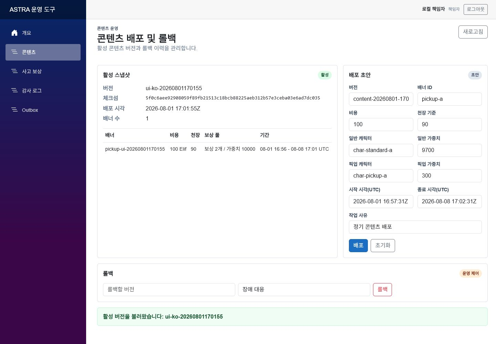
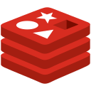
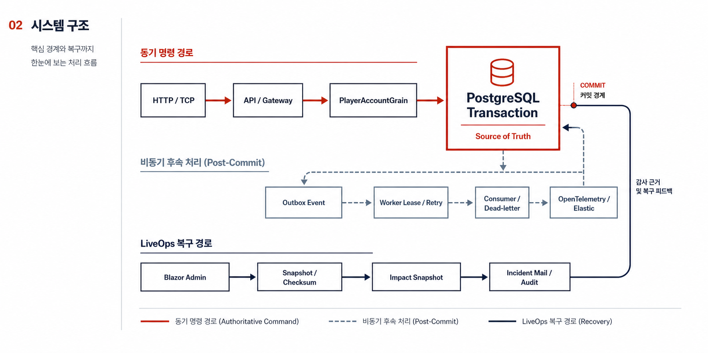
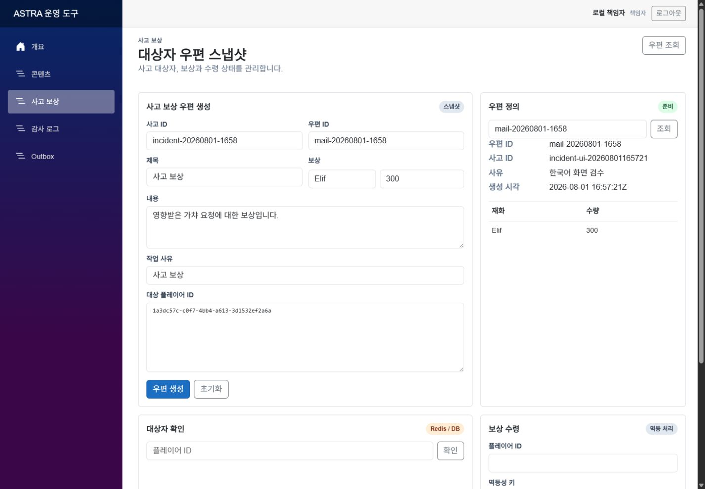
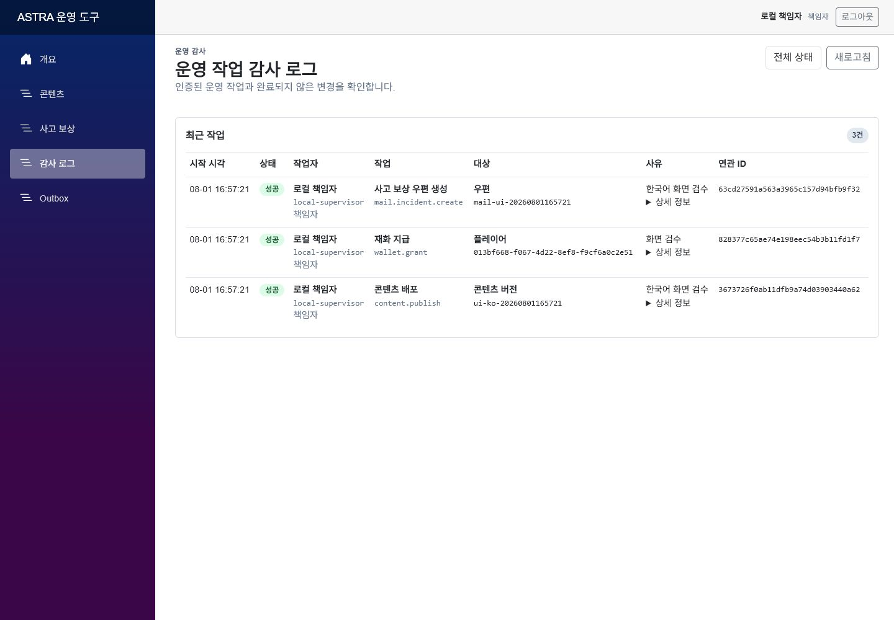
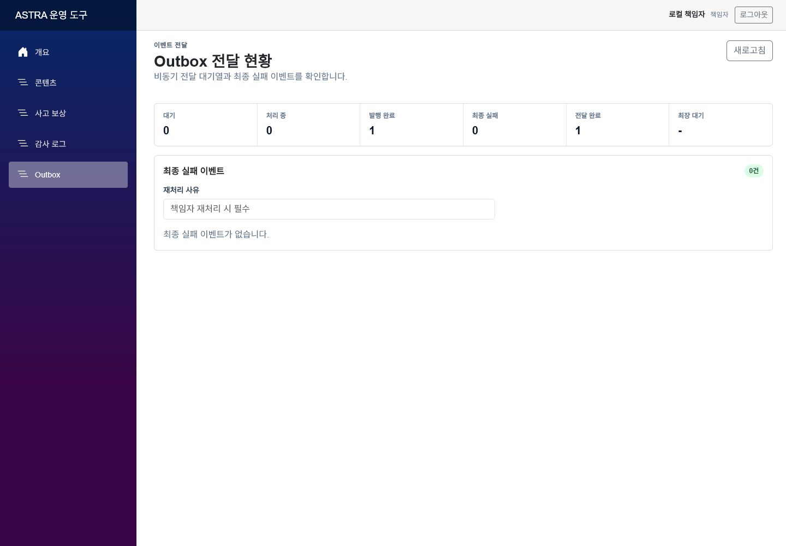
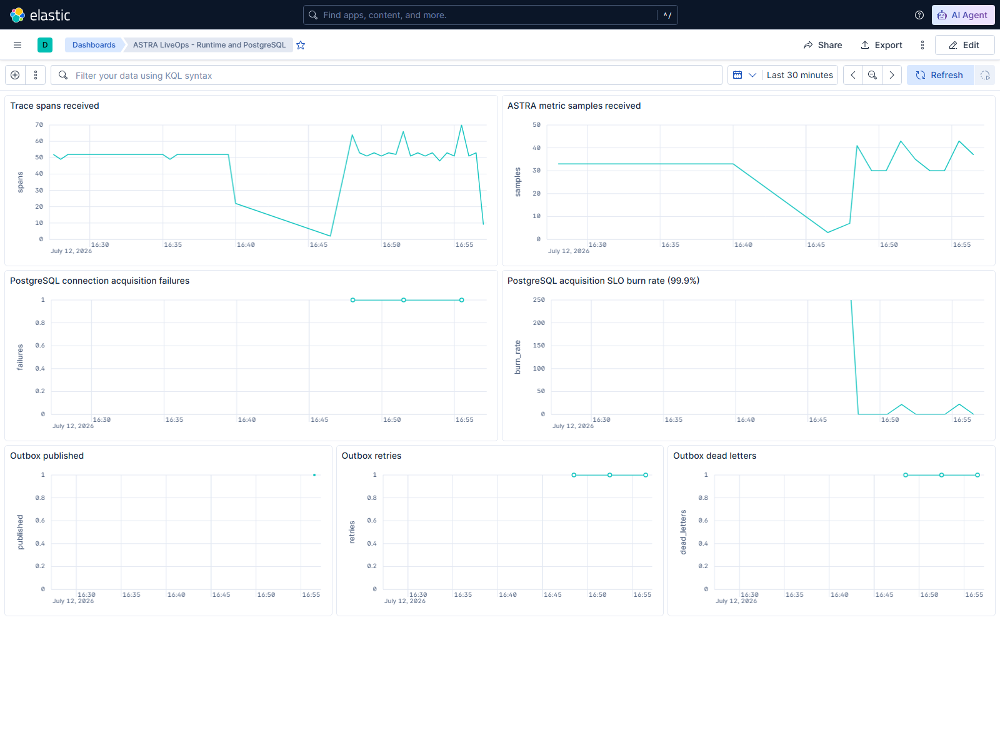

개인 프로젝트
ASTRA 게임 운영 서버
게임 운영자가 콘텐츠를 배포하고, 문제가 생기면 배포를 되돌려 피해를 본 플레이어에게 보상을 보내는 시스템입니다.
- 맡은 일
- 게임 운영 서버와 관리자 화면을 직접 만들고, 같은 보상을 동시에 요청하거나 서버가 중단되는 경우를 시험했습니다.
- 확인한 결과
- 통합 데모에서 같은 우편을 다시 청구해도 보상 200 ELIF는 한 번만 지급됐습니다.


- 구분과 기간
- 개인 프로젝트 (2026.07.06~07.13, 보강 08.02)
- 사용 기술
- .NET 10, ASP.NET Core, Microsoft Orleans,
 PostgreSQL,
PostgreSQL, 
Redis, Blazor, OpenTelemetry,
Blazor, OpenTelemetry,  Docker
Docker
설계에서 내린 결정
응답이 유실돼도 같은 요청은 한 번만 반영
Orleans Grain에서 플레이어별 명령을 직렬화하고 요청 키와 본문 해시로 재전송을 구분했습니다. 재화 변동과 완료 응답을 같은 PostgreSQL 트랜잭션에 저장해, 재시도에는 저장된 응답을 반환했습니다.
재화 변동은 응답 전에 확정하고 후속 작업은 따로 처리
플레이어는 보상이 지급됐는지만 알면 되므로, 응답을 운영용 데이터 갱신이 끝날 때까지 늦추지 않았습니다. 재화 변동과 후속 작업 목록(Outbox)을 한 트랜잭션에 저장한 뒤 응답하고, Worker가 남은 일을 처리하게 했습니다. 작업이 다시 전달돼도 처리하는 쪽에서 이벤트 ID를 확인해 같은 결과를 두 번 반영하지 않습니다.
잘못 배포한 버전의 영향 대상에게만 보상
버전을 되돌려도 잘못된 설정으로 이미 플레이한 사람에게 보상이 자동으로 돌아가지는 않습니다. 복구할 콘텐츠는 배포 버전과 체크섬으로 식별하고, 보상 우편은 롤백 시점에 확정한 피해 대상 명단에만 보냈습니다.
무엇을 확인했나
| 처리 내역 | 재화 변동 |
|---|---|
| 초기 지급 | +500 |
| 뽑기 1회 | −100 |
| 보상 우편 수령 | +200 |
| 같은 우편 재청구 | 추가 지급 없음 |
| 최종 잔액 | 600 ELIF |
- 테스트 108건 통과 (단위 76, 동시성 1, 실패 주입 2, 통합 29).
- PostgreSQL을 연결해 HTTP와 TCP 요청을 시험했습니다. Orleans 서버 두 대 중 한 대를 종료해도 나머지 서버는 계속 동작했습니다.
- Docker 이미지 5종을 non-root로 실행했습니다. 당시 릴리스 빌드 경고와 취약 패키지는 0건이었고 CI를 통과했습니다.
검증 범위
현재는 Helm lint와 template, Terraform validate까지 확인했습니다. Kubernetes 배포와 Azure Terraform apply, 운영 처리량은 추가 검증이 필요합니다.
시스템 구조
명령 처리와 PostgreSQL 트랜잭션을 중심으로, 커밋 이후 비동기 처리와 LiveOps 복구 경로가 분기되는 구조


구성 요소를 글로 보기
동기 명령 경로
재시도와 동시 요청을 한 번의 결과로 고정
- HTTP / TCP: 동일 command 계약
- API / Gateway: 인증, 검증, 요청 해석
- PlayerAccountGrain: 플레이어별 명령 직렬화
- PostgreSQL transaction: 상태, 원장, 감사, 응답 원자적 commit
커밋 이후 처리
업무 트랜잭션과 후속 작업을 분리
- Outbox event: 업무 데이터와 함께 기록
- Worker lease / retry: 중복 실행과 재시도 제어
- Consumer / dead-letter: 실패 격리와 운영자 재처리
- OpenTelemetry / Elastic: trace, 지표, 경보 확인
LiveOps 복구 경로
잘못된 배포를 되돌리고 영향 대상에게 보상
- Blazor Admin: 배포, 롤백, 보상 명령
- Snapshot / checksum: 배포 버전과 복구 기준 고정
- Impact snapshot: 사고 영향 대상 확정
- Incident Mail / audit: 멱등 보상과 감사 기록
롤백 후 보상 발송과 작업 기록




후속 작업과 서버 상태




코드와 자료
ASTRA 저장소 프로젝트 종합 문서 아키텍처 도식 GitHub Actions CI Kibana 상세 지표 화면